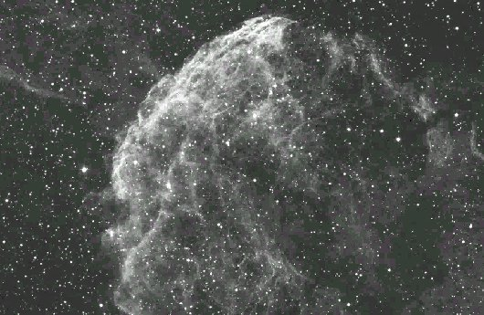

17.5: at 82x with OIII filter this supernova remnant appears moderately bright, large, elongated 5:2 NW-SE. Appears a bit larger and brighter at the NW end. Much fainter nebulosity is close S off the W end and a couple of mag 10 stars are superimposed. Surprisingly prominent with an OIII filter. - Steve Gottlieb